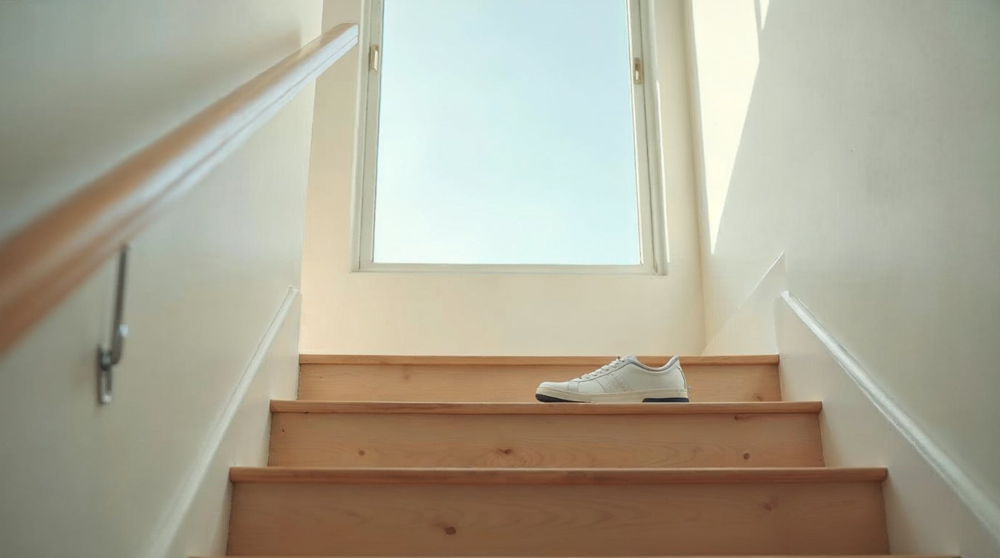
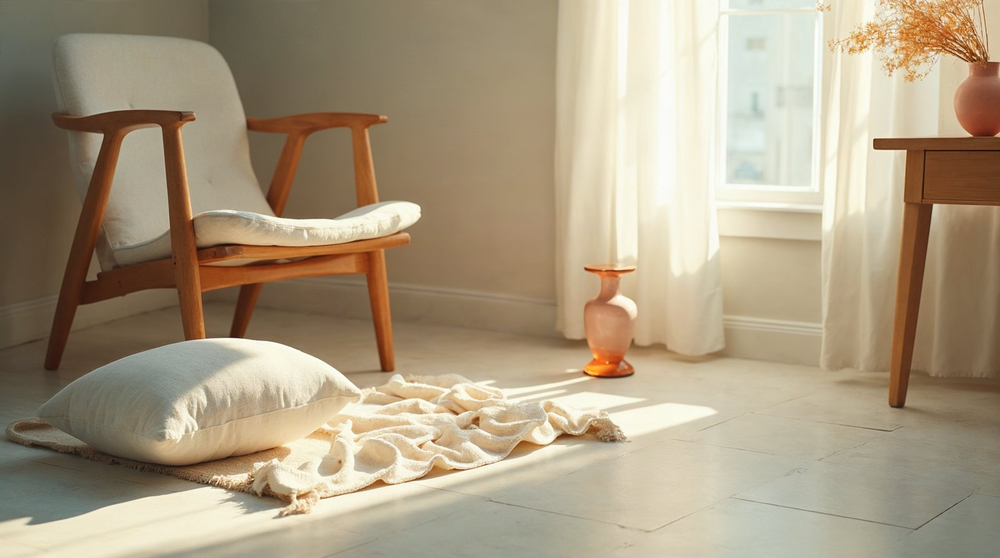
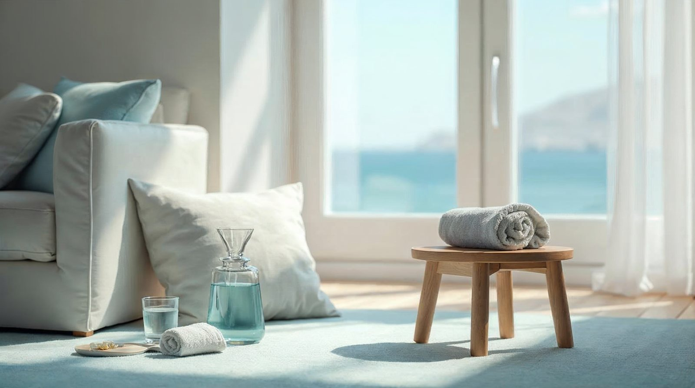
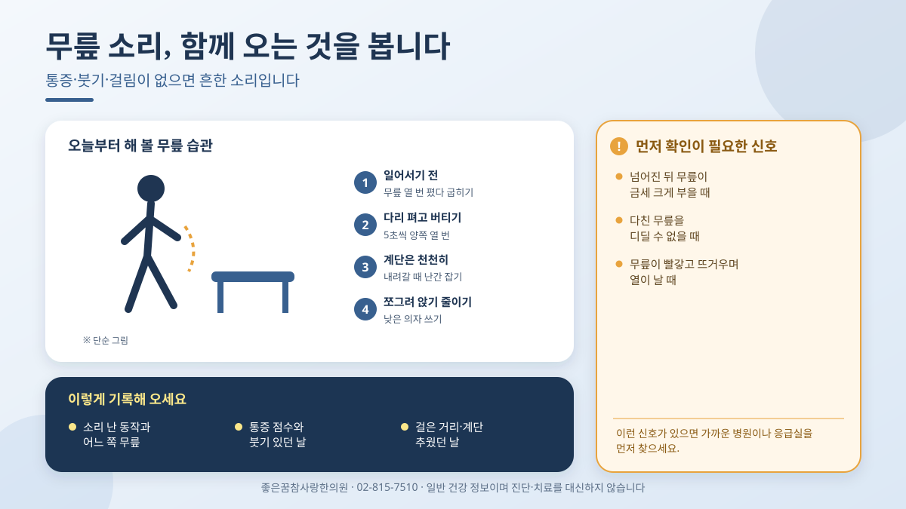

이종호 한의사 감수좋은꿈참사랑한의원 대표원장 (한의사 면허번호 19769)발행 2026-11-26 · 수정 2026-11-27
이 글의 차례
아침에 일어나 쪼그려 앉아 양말을 신는 순간, 무릎에서 '뚝' 하는 소리가 나요. 계단을 올라갈 때마다 '우두둑' 하는 소리가 따라오기도 하고요. 아프지는 않은데 소리가 날 때마다 마음 한쪽이 서늘해지죠. '벌써 무릎이 닳은 걸까.'
진료실에서 무릎 소리 얘기를 꺼내시는 분들은 대개 통증보다 걱정이 먼저예요. 운동을 좋아하는 젊은 분도, 계단을 자주 오르내리시는 어르신도, 아이를 안고 하루를 보내는 부모님도 같은 질문을 하세요. "이 소리, 괜찮은 거예요?"
무릎 소리는 생각보다 흔해요. 원래 그래요. 소리가 난다는 사실만으로 무릎에 큰 문제가 있다고 보기는 어렵고, 아무 불편 없이 오랫동안 소리를 달고 지내는 분도 많거든요.
그러니까 사실은 '소리가 나는 무릎'과 '아픈 무릎'은 다른 얘기예요. 소리만 나는 건 지켜봐도 되는 경우가 많지만, 소리와 함께 통증, 붓기, 걸리는 느낌이 따라온다면 얘기가 달라져요. 그때는 같이 들여다봐야 하거든요.
오래 쓴 나무 문도 열고 닫을 때 삐걱 소리가 나지만, 그렇다고 다 고장 난 건 아니잖아요. 문이 잘 열리고 잘 닫히면 괜찮은 거고, 문이 걸리거나 안 닫힐 때 살펴보면 되는 거예요. 무릎도 비슷해요.
이 글에서는 무릎 소리가 왜 나는지, 괜찮은 소리와 살펴볼 소리를 어떻게 나누는지, 집에서 무엇을 해 볼 수 있는지를 차례로 풀어 볼게요.
무릎에서 나는 소리는 어떤 소리인가요?
무릎에서 나는 소리는 크게 두 갈래로 나눠 볼 수 있습니다. 하나는 한 번 '뚝' 하고 나고 나서 한동안 다시 나지 않는 소리이고, 다른 하나는 움직일 때마다 '사각사각', '드드득' 하고 이어지는 소리입니다. 두 소리는 생기는 이유가 조금 다릅니다.
한 번 '뚝' 하는 소리는 관절 안의 압력이 바뀌면서 나는 경우가 많습니다. 손가락 마디를 꺾을 때 나는 소리와 비슷한 원리라고 이해하시면 됩니다. 이런 소리는 한 번 나고 나면 한동안 다시 나지 않고, 아프지 않다면 크게 걱정하지 않으셔도 되는 경우가 많습니다.
힘줄이나 인대가 뼈의 튀어나온 부분 위를 넘어가면서 소리가 나기도 합니다. 무릎을 굽혔다 펼 때 특정 각도에서 '툭' 하고 걸리듯 나는 소리가 여기에 해당합니다. 이 역시 아프지 않다면 흔한 소리입니다.
반면 움직일 때마다 이어지는 '사각사각' 하는 마찰 같은 소리는 무릎뼈 뒤쪽이나 관절 면이 맞닿는 부분에서 나는 경우가 있습니다. 이 소리가 계단이나 쪼그려 앉기에서 시큰한 통증과 함께 온다면 조금 더 살펴볼 필요가 있습니다.
왜 무릎에서 소리가 날까요
무릎은 우리 몸에서 가장 큰 관절 가운데 하나이고, 허벅지뼈와 정강이뼈, 무릎뼈가 만나는 자리입니다. 그 사이를 연골과 반월상연골이 받쳐 주고, 주변을 힘줄과 인대가 감싸고 있습니다. 이렇게 여러 구조가 함께 움직이다 보니 소리가 나는 것은 어찌 보면 자연스러운 일입니다.
허벅지 앞쪽 근육이 약하거나 좌우 힘의 균형이 맞지 않으면 무릎뼈가 정해진 길에서 살짝 벗어나 움직이기도 합니다. 이럴 때 무릎뼈 뒤쪽에서 마찰 소리가 나고, 계단을 내려가거나 오래 앉아 있다 일어설 때 시큰함이 함께 오는 경우가 있습니다.
오래 앉아 있다 일어나면 관절 주변이 굳어 처음 몇 걸음에 소리가 더 잘 납니다. 날이 춥거나 몸이 식어 있을 때도 마찬가지입니다. 그래서 겨울 아침이나 장시간 회의 뒤에 소리가 더 잘 들린다고 느끼시는 분이 많습니다.
나이가 들면서 연골이 조금씩 얇아지면 관절 면이 맞닿을 때 소리가 날 수 있습니다. 이때는 소리만 나는 것이 아니라 계단에서 시큰하고, 자주 붓고, 아침에 뻣뻣한 느낌이 함께 오는 경우가 많아서 소리 하나보다 이런 불편이 함께 있는지를 봅니다.
괜찮은 소리와 살펴볼 소리는 어떻게 나누나요
소리 자체보다 소리와 함께 따라오는 것을 보시면 됩니다. 아래 표현 가운데 어디에 가까운지 떠올려 보세요.
- 아프지 않고, 붓지 않고, 한 번 나면 한동안 안 나는 소리
- 아프지 않지만 움직일 때마다 사각거리는 소리
- 계단이나 쪼그려 앉기에서 시큰한 통증과 함께 나는 소리
- 소리가 난 뒤 무릎이 붓거나 열이 나는 경우
- 무릎이 어느 각도에서 걸려 펴지지 않거나 힘이 툭 빠지는 경우
첫 번째와 두 번째는 아프지 않다면 생활 관리를 하며 지켜볼 수 있는 경우가 많습니다. 세 번째부터는 무릎 안이나 주변 구조에 무리가 가고 있을 수 있어서 진찰을 받아 보시길 권합니다.
특히 다친 뒤에 '뚝' 소리와 함께 통증이 생기고 그 뒤로 무릎이 걸리거나 힘이 빠지는 느낌이 이어진다면, 반월상연골이나 인대를 함께 확인해야 합니다. 이런 경우에는 정형외과에서 영상 검사를 받아 보시는 것이 좋습니다.

비슷해 보이지만 다른 무릎 불편
무릎뼈 주변이 시큰하고 계단을 내려갈 때 아픈 경우는 슬개대퇴통증일 수 있습니다. 소리가 함께 나는 경우가 많지만, 핵심은 무릎뼈 주변의 시큰함과 오래 앉아 있다 일어날 때의 불편입니다.
무릎 안쪽 아래가 콕 집히듯 아픈 경우는 거위발건염, 무릎 바깥쪽이 달릴 때 찌릿한 경우는 장경인대 증후군처럼 아픈 자리에 따라 이름이 달라집니다. 이런 경우에도 힘줄이 넘어가며 소리가 날 수 있어서, 소리보다 아픈 자리를 정확히 짚는 것이 중요합니다.
나이가 들며 계단에서 시큰하고 자주 붓는다면 퇴행성 관절염을 함께 살펴야 합니다. 이때는 소리가 나는지보다 붓기와 아침의 뻣뻣함, 걷는 거리가 줄었는지를 더 중요하게 봅니다.
나이와 생활에 따라 달라지는 무릎 소리
10대와 20대에는 키가 크고 운동량이 많아 무릎뼈 주변에서 소리가 나는 경우가 흔합니다. 이 시기의 소리는 대개 아프지 않고, 허벅지 근육이 자리를 잡으면서 줄어드는 경우도 많습니다. 다만 운동 뒤 무릎 아래나 무릎뼈 주변이 아프다면 운동량을 함께 돌아봐야 합니다.
30대와 40대에는 앉아서 일하는 시간이 길어지고 운동은 주말에 몰아서 하는 분이 많습니다. 평일에 굳어 있던 무릎으로 주말에 등산이나 달리기를 하면 소리와 함께 시큰함이 생기기 쉽습니다. 평일에 짧게라도 무릎을 움직여 두시는 것이 좋습니다.
50대 이후에는 계단과 언덕길에서 소리와 함께 시큰함을 느끼는 분이 늘어납니다. 이때는 소리 자체보다 붓기, 아침 뻣뻣함, 걸을 수 있는 거리가 어떻게 달라졌는지를 함께 봅니다. 무릎을 아끼려고 움직임을 줄이기보다, 아프지 않은 범위에서 꾸준히 쓰는 것이 중요합니다.
출산 뒤나 체중이 갑자기 늘어난 시기, 새로 운동을 시작한 시기에도 무릎 소리가 늘었다고 느끼는 분이 계십니다. 몸의 변화가 있었던 시기와 소리가 시작된 시기가 겹치는지 떠올려 보시면 실마리가 됩니다.
먼저 이렇게 여쭙니다
무릎 소리로 오시면 저는 대략 이런 순서로 여쭙니다. 미리 떠올려 오시면 이야기가 훨씬 수월해집니다.
- 소리는 언제부터 났고, 어떤 동작에서 가장 잘 나나요?
- 소리와 함께 아프거나 붓거나 걸리는 느낌이 있나요?
- 한쪽 무릎인가요, 양쪽 무릎인가요?
- 예전에 넘어지거나 운동하다 무릎을 다친 적이 있나요?
- 요즘 계단, 등산, 달리기, 쪼그려 앉는 일이 늘었나요?
- 체중이 최근에 늘었거나 신발을 바꾸셨나요?
소리가 나는 동작을 진료실에서 직접 보여 주시면 가장 정확합니다. 쪼그려 앉기, 한 발로 서기, 계단 오르는 시늉처럼 평소 소리가 나는 동작을 천천히 해 보며 함께 확인합니다.
집에서 해 볼 수 있는 간단한 확인
소리가 걱정된다면 집에서 아래 동작을 천천히 해 보세요. 아프면 바로 멈추시면 됩니다.
- 의자에 앉아 무릎을 쭉 폈다 굽혔다 열 번 해 보기
- 벽을 짚고 반쯤만 앉았다 일어나 보기
- 계단 한 칸을 천천히 올랐다 내려와 보기
- 양쪽 무릎을 손바닥으로 덮고 굽혔다 펴며 소리를 비교해 보기
어느 동작에서, 어느 쪽 무릎에서, 어느 각도에서 소리와 불편이 나는지 적어 두시면 진료실에서 큰 도움이 됩니다. 소리만 나고 아프지 않다면 지금 단계에서는 생활 관리부터 시작해 보셔도 됩니다.
일상에서 먼저 해 볼 수 있는 것
무릎 소리가 아프지 않다면, 무릎 주변 근육을 깨우고 관절을 부드럽게 쓰는 습관이 도움이 될 수 있습니다. 한꺼번에 많이 하기보다 매일 조금씩 이어 가 보세요.
- 오래 앉아 있었다면 일어서기 전에 무릎을 열 번쯤 폈다 굽히기
- 의자에 앉아 한쪽 다리를 쭉 펴고 5초 버티기를 양쪽 열 번씩
- 계단은 난간을 잡고 한 칸씩 천천히, 내려갈 때는 특히 천천히
- 쪼그려 앉아 일하는 대신 낮은 의자 쓰기
- 걷기는 평지에서 편안한 속도로 시작하기
허벅지 앞쪽 근육은 무릎뼈가 정해진 길로 움직이도록 돕습니다. 이 근육이 약해지면 무릎뼈가 흔들리며 소리와 시큰함이 늘 수 있어서, 무리 없는 범위에서 꾸준히 힘을 길러 주는 것이 좋습니다.
추운 날에는 무릎을 따뜻하게 감싸 주세요. 몸이 식은 상태에서 갑자기 계단을 오르거나 뛰면 관절 주변이 굳어 있어 불편이 커질 수 있습니다. 외출 전 가볍게 제자리 걷기를 하는 것만으로도 차이를 느끼실 수 있습니다.
체중이 최근에 늘었다면 무릎이 받는 부담도 함께 늘었을 수 있습니다. 계단을 오를 때 무릎은 몸무게보다 훨씬 큰 힘을 받기 때문에, 체중 관리는 무릎을 아끼는 좋은 방법 가운데 하나입니다.

피하면 좋은 습관
무릎 소리가 날 때 일부러 소리를 내려고 무릎을 비틀거나 꺾는 분이 계십니다. 소리가 나면 시원한 느낌이 들 수 있지만, 반복해서 비틀면 주변 조직에 부담이 될 수 있으니 권하지 않습니다.
바닥에 오래 쪼그려 앉아 일하는 것, 양반다리로 오래 앉는 것, 무릎을 꿇고 걸레질하는 것도 무릎뼈 뒤쪽에 큰 압력을 줍니다. 김장이나 대청소처럼 피할 수 없는 날이라면 중간중간 일어나 무릎을 펴 주세요.
소리가 싫어서 무릎을 아예 쓰지 않으려 하는 것도 좋지 않습니다. 움직임이 줄면 근육이 약해지고, 근육이 약해지면 무릎이 더 불안정해지는 흐름으로 이어질 수 있습니다. 아프지 않은 범위 안에서는 꾸준히 움직여 주세요.

한의원에서 함께 살필 수 있는 경우
- 소리와 함께 계단이나 쪼그려 앉기에서 시큰한 경우
- 오래 앉아 있다 일어날 때 무릎이 뻣뻣하고 불편한 경우
- 날이 춥거나 흐리면 무릎이 무겁고 시린 경우
- 운동량을 늘린 뒤 무릎 주변 힘줄이 아픈 경우
- 한쪽 무릎만 소리가 나고 걸음걸이가 달라졌다는 말을 듣는 경우
좋은꿈참사랑한의원에서는 진찰한 내용을 바탕으로 생활에서 바꿔 볼 것과 함께 침 치료, 추나요법, 체외충격파 가운데 지금 상태에 맞는 것을 정합니다. 필요하다고 판단되면 초음파로 무릎 주변을 함께 살핍니다.
다친 뒤 무릎이 걸리거나 힘이 빠지는 느낌이 이어진다면 정형외과에서 영상 검사를 함께 받아 보시길 권합니다. 다른 병원에서 받은 약이나 주사 치료가 있다면 알려 주시고, 처방받은 약은 상의 없이 멈추지 않습니다.
이렇게 기록해 오시면 상담이 쉬워집니다
무릎 소리는 진료실에서 잘 안 날 때도 있습니다. 그래서 집에서의 기록이 큰 도움이 됩니다. 1~2주 정도만 간단히 적어 보세요.
- 소리가 난 동작과 어느 쪽 무릎인지
- 소리와 함께 통증이 있었는지, 있었다면 0~10점으로
- 붓기나 열감이 있었던 날
- 그날 걸은 거리, 계단, 운동 내용
- 날씨가 춥거나 흐렸던 날
가능하다면 소리가 나는 동작을 휴대폰으로 짧게 찍어 오셔도 좋습니다. 소리와 함께 무릎이 어떻게 움직이는지 보면 이야기가 훨씬 빨라집니다.
소리보다 무릎이 보내는 다른 신호를
무릎 소리는 그 자체로 놀랄 일이 아닌 경우가 많아요. 소리에 귀 기울이는 만큼, 통증과 붓기, 걸리는 느낌처럼 무릎이 함께 보내는 신호를 살펴봐 주세요.
무릎은 안 쓰는 게 아니라 잘 쓰면 되는 거예요. 소리가 무서워 계단도 산책도 다 끊으시면 오히려 무릎을 받치는 허벅지 힘이 줄어들 수 있거든요. 세게, 많이보다 약하게, 오래, 매일 쓰는 쪽이 무릎과 오래 잘 지내는 길이에요.
무릎을 살피는 건 제가 맡을게요. 대신 하나만 부탁드려요. 오래 앉아 있다 일어서기 전에 무릎을 열 번 폈다 굽혀 주세요. 그거 하나예요. 딴 건 하시던 대로 편하게 하셔도 돼요.
다음에 오실 때 소리가 나는 동작과 기록을 함께 보여 주시면, 그 동작부터 같이 살펴볼게요. 소리가 걱정되어 마음이 무거우셨다면 그 걱정부터 편하게 꺼내 놓으셔도 괜찮아요. 무릎은 오래 함께 써야 하는 관절이니, 지금부터 조금씩 아껴 주시면 돼요.
이런 증상은 먼저 확인이 필요합니다
- 넘어지거나 비틀린 뒤 무릎이 금세 크게 붓고 디딜 수 없는 경우
- 무릎이 빨갛고 뜨겁게 부어오르며 열이 함께 나는 경우
이런 신호가 있으면 한의원보다 가까운 병원이나 응급실을 먼저 찾으세요.
함께 읽으면 좋은 글
- 무릎 앞쪽, 무릎뼈 주변이 시큰한 슬개대퇴통증은 어떻게 살피나요?
- 계단에서 시큰하고 자주 붓는 무릎 퇴행성 관절염은 어떻게 살피나요?
- 무릎 반월상연골이 찢어졌다는 말을 들은 뒤에는 무엇을 살피고 어떻게 지내나요?
- 계단을 내려갈 때 무릎이 아프면 한의원에서는 무엇을 먼저 묻나요?
- 한파가 오면 무릎과 손가락 관절이 시리고 뻣뻣한 것은 왜 그런가요?

여쭙는 것
- 소리는 언제부터 났고, 어떤 동작에서 가장 잘 나나요?
- 소리와 함께 아프거나 붓거나 걸리는 느낌이 있나요?
- 한쪽 무릎인가요, 양쪽 무릎인가요?
생활에서 해 볼 것
- 오래 앉아 있었다면 일어서기 전에 무릎을 열 번쯤 폈다 굽히기
- 의자에 앉아 한쪽 다리를 쭉 펴고 5초 버티기를 양쪽 열 번씩
- 계단은 난간을 잡고 한 칸씩 천천히, 내려갈 때는 특히 천천히
한의원에서 함께 살필 것
- 소리와 함께 계단이나 쪼그려 앉기에서 시큰한 경우
- 오래 앉아 있다 일어날 때 무릎이 뻣뻣하고 불편한 경우
- 날이 춥거나 흐리면 무릎이 무겁고 시린 경우
먼저 확인이 필요한 신호
- 넘어지거나 비틀린 뒤 무릎이 금세 크게 붓고 디딜 수 없는 경우
- 무릎이 빨갛고 뜨겁게 부어오르며 열이 함께 나는 경우
한눈에 보는 표
| 구분 | 핵심 |
|---|---|
| 여쭙는 것 | 소리는 언제부터 났고, 어떤 동작에서 가장 잘 나나요? 소리와 함께 아프거나 붓거나 걸리는 느낌이 있나요? |
| 생활에서 해 볼 것 | 오래 앉아 있었다면 일어서기 전에 무릎을 열 번쯤 폈다 굽히기 의자에 앉아 한쪽 다리를 쭉 펴고 5초 버티기를 양쪽 열 번씩 |
| 한의원에서 함께 살필 것 | 소리와 함께 계단이나 쪼그려 앉기에서 시큰한 경우 오래 앉아 있다 일어날 때 무릎이 뻣뻣하고 불편한 경우 |
| 먼저 확인이 필요한 신호 | 넘어지거나 비틀린 뒤 무릎이 금세 크게 붓고 디딜 수 없는 경우 무릎이 빨갛고 뜨겁게 부어오르며 열이 함께 나는 경우 |
자주 묻는 질문
무릎에서 소리가 나면 관절염인가요?
소리만으로 관절염이라고 보기는 어렵습니다. 아프지 않고 붓지 않는 소리는 흔하고, 계단에서의 시큰함이나 잦은 붓기, 아침 뻣뻣함이 함께 있는지를 더 중요하게 봅니다.
무릎 소리가 나는데 운동을 계속해도 되나요?
아프지 않다면 평지 걷기처럼 무릎에 부담이 적은 운동은 이어 가셔도 됩니다. 운동 중이나 뒤에 통증이나 붓기가 생긴다면 강도를 줄이고 진찰을 받아 보세요.
일부러 무릎을 꺾어 소리를 내면 안 되나요?
시원한 느낌이 들 수 있지만 반복해서 비틀면 주변 조직에 부담이 될 수 있어 권하지 않습니다. 대신 무릎을 천천히 폈다 굽히는 동작으로 풀어 주세요.
어릴 때부터 무릎에서 소리가 났는데 괜찮을까요?
아프거나 붓지 않고 생활에 불편이 없다면 지켜보셔도 되는 경우가 많습니다. 소리와 함께 통증이 새로 생기거나 걸리는 느낌이 들면 그때 진찰을 받아 보세요.
초음파는 모든 분께 하나요?
아닙니다. 손으로 진찰한 뒤 필요하다고 판단되면 초음파로 무릎 주변 힘줄과 물이 찬 정도를 살펴봅니다.
좋은꿈참사랑한의원은 재진 때 지난번 이야기부터 이어서 여쭙니다. 진료시간과 예약은 오시는 길에서 확인하세요.
어디서 상담받을 수 있나요?
좋은꿈참사랑한의원은 서울 동작구 만양로2길 2 신성빌딩 3층·5층(서울 동작구 상도동, 7호선 상도역 3번 출구 근처)에 있습니다. 한의사 3명(이종호 대표원장, 조영기 수석진료원장, 정원영 진료원장)이 진료합니다. 진료시간은 평일 09:30~20:00(점심 13:00~14:00), 토·일·공휴일 09:30~15:00이며, 방문 전 전화로 확인을 권합니다. 예약은 네이버 예약, 카카오톡 상담, 전화 02-815-7510로 받습니다.
이 글은 일반적인 건강 정보이며 개인의 진단이나 치료를 대신하지 않습니다. 증상이 있거나 복용 중인 약이 있다면 진료를 통해 확인하세요. 치료 효과는 개인마다 다를 수 있습니다.
작성 기준: 일반적으로 알려져 있는 건강 정보를 참고해 정리했습니다(대표원장 감수). 증상 기록은 1~2주 동안 하루 1회, 비슷한 시간에 적어 오시면 지난 상태와 비교하기 쉽습니다.